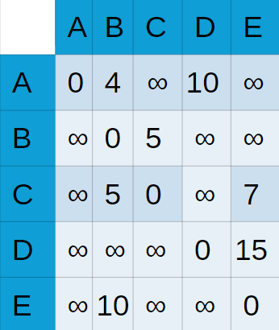

Este algorítimo tem o objetivo de encontrar todos os caminhos de menor custo entre os vértices de um grafo
Este é um exemplo de grafo. Esses grandes círculos são os vértices e as setas que ligam eles são as arestas. Os números em cima das arestas representam os pesos, ou seja, o quanto “custa” se deslocar de um vértice para o outro.
Você pode estar se perguntando “Para que esse algoritmo serve, afinal?”. Bem, se observar mais atentamente a figura, notará que nem todos os vértices desse grafo tem uma ligação direta entre eles. Seria impossível então se deslocar do vértice 1 até o 3? E se possível, qual o melhor “caminho” entre eles? Qual o melhor caminho entre quaisquer vértices?
Pois bem, todas essas perguntas também são feitas quando estamos pensando em nos locomover na cidade. E, ao abrir o Google Maps, somos respondidos!
Ele e outros softwares se utilizam do algoritmo de Floyd-Warshall para solucionar esses problemas, já que tal algoritmo recebe um grafo e devolve outro com todas as menores distâncias. Devidamente motivados, vamos pensar mais no código em si.
Quando se deve usar o algoritmo de Floyd-Warshall?
O algoritmo é uma excelente escolha em situações específicas, como quando é necessário calcular o caminho de menor peso entre todos os pares de nós em um grafo ponderado, ou seja, em cenários que se exige calcular todas as distâncias de pares de vértices.
O que o código recebe
Os grafos, sendo representações visuais de relações entre objetos, precisam ser traduzidos para estruturas de dados e algoritmos compreensíveis pelo computador. A tradução para códigos permite que o algoritmo analise e processe as informações contidas no grafo de forma eficiente e sistemática, facilitando a resolução de problemas relacionados a ele.
Para que o código então consiga fazer essa análise precisaremos de uma estrutura que seja capaz de mostrar a origem e o destino e quanto custa este deslocamento. Em outras palavras, precisaremos de uma estrutura que a quando o código ler ao mesmo tempo a posição que indica o vértice 1 e outra posição que indica o vértice 2 seja retornado o custo desse deslocamento
Atividade
A partir da descrição acima consegue identificar, qual é a melhor tradução do grafo para o código ?
Gabarito
A melhor forma do algoritimo de conseguir intepretar este grafo é através de uma matriz, em que as linhas e as colunas são os vértices
Após a tradução do grafo, será gerada uma matriz de tamanho nxn, sendo que n representa a quantidade de vertíces.
Atividade
Complete a matriz abaixo com base no grafo passado no início do handout. Considere ainda os custos de usar caminhos diretos , ou seja, apenas um passo, uma vez que esse é o input do código. Onde não há uma aresta ligando os vértices não se preocupe em preencher, pois haverá uma explicação sobre o que fazer com esses espaços
Gabarito
Provavelmente você obteve algo como:
onde os valores representados no grafo são os pesos dos caminhos entre os vértices. É prudente concluir que o peso do caminho de um grafo até ele mesmo seja zero.
Atividade
A nossa matriz ainda não parece completa. Existem muitos espaços em branco entre os vértices que não são conectados diretamente.
Como preencheremos esse espaço?
Gabarito
Como não há caminho nenhum ligando esses vértices e o objetivo do algortimo é encontrar os menores caminhos, faz sentido atribuir o valor infinito a esses espaços.
Isso é exatamente o que o algoritmo faz, para garantir que encontraremos os caminhos de menor peso
Reflita um pouco antes de ir para próxima parte. Só continue após entender que:
grafos podem ser representados por matrizes;
como preencher a matriz devidamente a partir do grafo;
Simulando o código
O algoritmo de Floyd-Warshall, como mencionado anteriormente, visa encontrar o caminho de menor custo entre todos os vértices de um grafo. Se uma pessoa fosse incumbida dessa tarefa, é provável que ela adotasse um método de teste de todas as combinações possíveis para garantir a identificação desses caminhos. O método empregado pelo algoritmo não se distancia muito dessa abordagem.
Atividade
Ok , mas como que o algoritimo testa todos os vértices para ter garantia que encontrou o caminho de mneor custo entre eles?
Gabarito
Para fazer isso o algoritmo testa todos os vértices para garantir que encontrou o “melhor” caminho entre eles. Isso é realizado por meio de loops. Esses loops são essenciais para iterar sobre todos os pares de vértices e calcular os caminhos de menor custo entre eles. É importante comentar que o loops iniciam em 0 e vai até n, sendo n a quantidade de vértices.
O código começa a ter uma cara assim :
Floyd-Washall:
vértice_intermediário= primeiro vértice a ser analisado
vértice_origem=primeiro vértice a ser analisado
vértice_destino=primeiro vértice a ser analisado
enquanto vértice_origem não for o ultimo vértice:
enquanto vértice_destino não for o ultimo vértice:
enquanto c não for o ultimo vértice:
Voltando à abordagem de uma pessoa para resolver esse problema, após selecionar um vértice, ela começaria a verificar se há um caminho melhor utilizando esse vértice como ponto de partida.
Atividade
Como você faria essa verificação?
Gabarito
Se sua resposta envolve checar os custos das arestas, está correta, pois, afinal, esse é o único parâmetro que determina se um caminho é realmente o de mneor peso.
Agora precisamos entender como o código realiza essa tarefa, ou seja, como ele pode garantir qual caminho é realmente o de menor custo.
Atividade
Como o código pode ter esta certeza de qual caminho tem o menor custo
Gabarito
O algoritmo realiza essa análise por meio de uma condição que verifica se o caminho direto entre dois vértices é o de menor peso, ou se o caminho do primeiro vértice ao vértice auxiliar em uso, e deste último ao vértice de destino, tem o menor peso possível.
Adicionando essa verificação no código:
Floyd-Washall:
vértice_intermediário= primeiro vértice a ser analisado
vértice_origem=primeiro vértice a ser analisado
vértice_destino=primeiro vértice a ser analisado
enquanto vértice_origem não for o ultimo vértice:
enquanto vértice_destino não for o ultimo vértice:
enquanto c não for o ultimo vértice:
se o caminho do vértice vértice_origem ->vértice_destino > o caminho do vértice vértice_origem->vértice_intermediário->vértice_destino:
vértice_origem ->vértice_destino =vértice_origem->vértice_intermediário->vértice_destino
Se o uso deste vértice resultar em um caminho com um custo menor, o algoritmo atualiza o valor da posição analisada na matriz
No final o código deverá ficar com essa cara:
Floyd-Washall:
vértice_intermediário = primeiro vértice a ser analisado
vértice_origem = primeiro vértice a ser analisado
vértice_destino = primeiro vértice a ser analisado
enquanto vértice_origem não for o ultimo vértice:
enquanto vértice_destino não for o ultimo vértice:
enquanto c não for o ultimo vértice:
se o caminho do vértice vértice_origem ->vértice_destino > o caminho do vértice vértice_origem->vértice_intermediário->vértice_destino:
vértice_origem ->vértice_destino =vértice_origem->vértice_intermediário->vértice_destino
Atividade
Agora, ainda usando o grafo passado no ínicio do handout, simule usando o vértice 1 como auxiliar como ficaria a matriz, usando os princípios do código , ou seja, de ir percorrendo a matriz e testando se com o vértice auxiliar resultaria em caminho de custo menor.
Gabarito
Foto da matriz
Acompanhe pela animação o que acontece com a matriz depois de cada iteração do algoritimo
Complexidade do Algoritmo
Agora nós já podemos supor como será a complexidade do algoritmo, aspecto crucial para entender em quais contextos ele é mais apropriado.
Exercício: Estimando a complexidade do algoritmo
Com base no contexto anterior, analise a função floydMarshall_rodoviaria e estime a sua comlexidade.
Gabarito
O algoritmo tem uma complexidade de O(n^3) .
Reflita um pouco mais...
Lembre-se para cada dois vértices, existe uma iteração intermediária.
Gabarito
Analisando o código do algoritmo percebemos que ele é baseado em três loops alinhados iterando sobre os vértices.
O grafo tem ‘n’ vértices, cada loop irá iterar ‘n’ vezes.
Cada uma das ‘n’ iterações do loop intermediário é combinada com o ‘n’ origem e o ‘n’ destino.
O total de iterações será n * n * n.
Assim, a complexidade do algoritmo de Floyd-Warshall é O(n^3).
Eficiência da Memória do Algoritmo
Exercício
E qual seria a eficiência da memória algoritmo?
Gabarito
A eficiência de memória será O(n^2).
Como o nome já diz, quando estamos falando de eficiência de memória estamos determianando o espaço necessário para armazenar essa matriz. Para a matriz utilizada temos:
Um vértice de origem.
Um vértice de destino.
Assim, como salvamos a matriz em uma última iteração e suas dimensões são n x n.
Portanto, a complexidade espacial do algoritmo de Floyd-Warshall é O(n^2).
Desafio
Desafio
Pense em um contexto de redes de transporte, em uma cidade com várias estações de ônibus ou metrô, cada uma conectada diferentes e diversas rotas específicas. O objetivo é determinar o tempo de viagem mais curto entre todas as estações, considerando todas as possíveis conexões diretas e indiretas.
Imagine uma cidade com 5 estações de ônibus, de A até E, com as seguintes conexões, diretas e indiretas, e pesos(tempos/distância).
Você foi designado a trabalhar na otimização dessa rede.
A conecta com B em 4 minutos.
A conecta com D em 10 minutos.
B conecta com C em 5 minutos.
C conecta com B em 5 minutos.
D conecta com E em 15 minutos.
E conecta com B em 10 minutos.
C conecta com E em 7 minutos.
Modelando o problema
Pense, quem será a rodoviária e o que o tempo representa no problema.
Gabarito
Cada estação será um vértice no grafo;
Cada rota direta entre duas estações será uma aresta no grafo, com peso correspondente ao tempo de viagem entre essas duas estações.
Implementando o algoritmo
2. Agora você vai implementar o algoritmo. Aplique a situação descrita na matriz inicial, nesse caso baseando nos tempos de viagem diretos entre as estações e se não houver conexão direta, o valor passa a ser infinito. Desenhe a matriz e depois implemente o algoritmo para obter o resultado de todos os pares da tabela.
Gabarito
void floydWarshall_rodoviária() {
int dist[V][V], i, j, k;
// Inicializa a matriz de solução da mesma forma que a matriz de entrada do grafo
for (i = 0; i < V; i++)
for (j = 0; j < V; j++)
dist[i][j] = graph[i][j];
// Loops utilizados para calcular a menor distância entre todos os pares de
// vértices através de um vértice intermediário.
for (k = 0; k < V; k++) { // Para cada 'k' vértice intermediário.
for (i = 0; i < V; i++) { // Para cada 'i' vértice: origem.
for (j = 0; j < V; j++) { // Para cada 'j' vértice: destino.
// atualiza a distância se o caminho for mais curto
if (dist[i][k] + dist[k][j] < dist[i][j])
dist[i][j] = dist[i][k] + dist[k][j];
}
}
}
}
No final, você terá uma matriz de distâncias que fornecerá o tempo de viagem mais curto entre cada estação rodoviária.
Eficiência do Algoritmo
Exercicio
E a eficiência do algoritmo?
Gabarito
A eficiência de memória será O(n^2).
Exercicio
Reflita mais um pouco antes de ver o gabarito
Leia a resposta novamente.
Gabarito
Estamos determianado o espaço necessário para armazenar essa matriz.
Temos que ter um vértice de origem e um vértice de destino, como salvamos a matriz em uma última iteração e suas dimensões são n x n.
Portanto, a complexidade espacial do algoritmo de Floyd-Warshall é O(n^2).